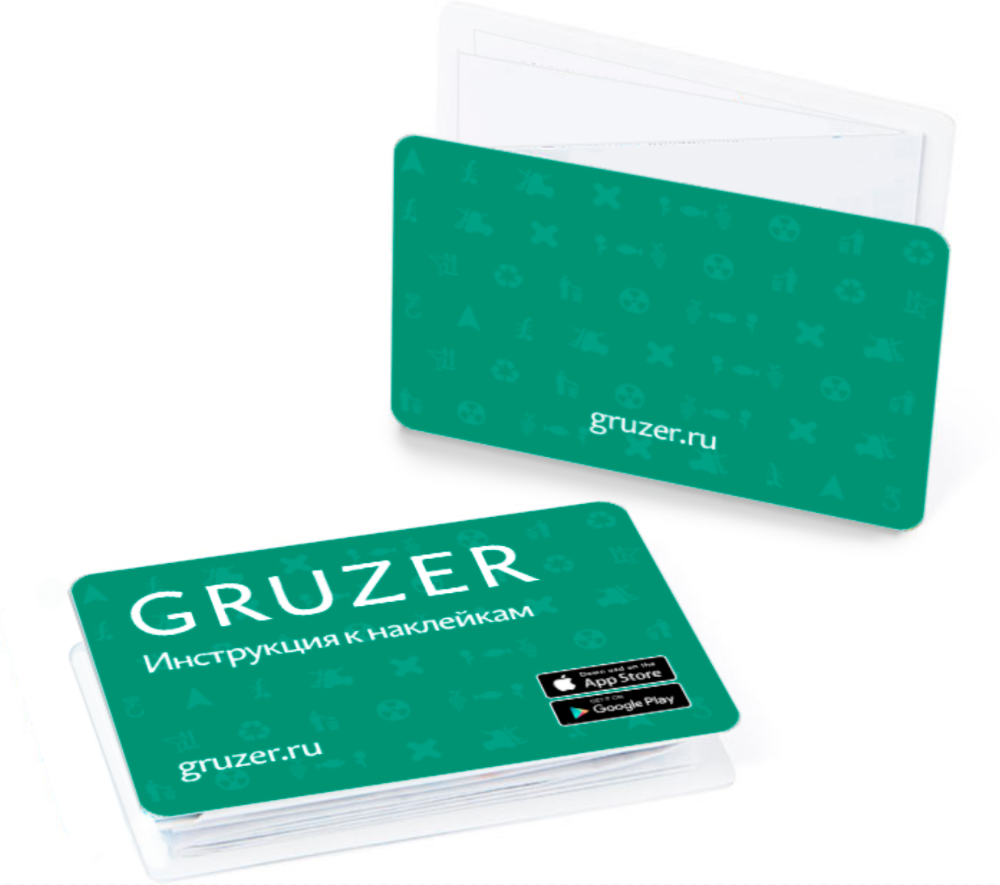

Тестовое задание «Азбуки»
Разработка логотипа, концепции сайта и проработка инструкций для Gruzer
Задание:
- «Поработай над логотипом нашего агенства. Ты ни в чем не ограничен. Делай что хочешь, но не выходи за рамки)»
- «В прикрепленном файле промежуточный вариант прототипов нашего будущего сайта. Этого хватит для задачи. Ждем от тебя концепт на примере одной из страниц, а может и рекомендации по интерфейсу.»
- «В прикрепленном файле итоговый макет инструкции к наклейкам по проекту gruzer.ru. Твоя задача убрать недочеты, представить как ты это видишь.»
Срок: до 1100 пятницы 8 апреля
Логотип
Выбрал два направления: geometric и serif. Оба используют текстовую часть без знака, его отстутствие обусловлено тем, что «продвигать» знак не имеет смысла. Текст лёгок в прочтении и гибок к изменению цвета.
Концепция сайта
Первый вариант:
Главная страница
Страница проекта
Второй вариант:
Концепция в тенденции. Сайт отвечает последним веяниям моды сайтостроения (минус в том, что тенденции меняются, и сайт нужно чаще обновлять). Весь принцип основывается на анимациях, которые создают движение на странице и придают современный вид.
Зеленый фон — анимация (видео, графика или фон, быстро и плавно изменяющий цвет)
Меню — выплывающее сверху/справа
Третий вариант:
В этом примере преобладает акцент на контенте. Каждое слово и изображение получают бо́льшее внимание.
Узкое строение сайта позволяет вести за собой «глаз» пользователя и преподносить информацию в нужном ракурсе.
Четвертый вариант:
Инструкции «Gruzer»
Логотип Gruzer не использовалВнешний вид:
— Изменил систему складывания инструкции. Сделал ее по методам оригами, теперь она легче складывается и наоборот.
— Внешние картонки имеют размер пластиковой карты 54х86мм (по ISO 7810)
— Внутренняя страница А4, которая делится на 16 прямоугольных частей 50х73мм.
— Использовал официальные бэджи App Store и Play Market
— Создал паттерн, состоящий из пиктограмм наклеек, в котором можно настраивать контрастность в зависимости от назначения его использования.
+ Для «плоского» складывания лучше использовать тонкую, прочную бумагу (80-90мг).
Наполнение:
— Расположил все наклейки на одной странице, это избавит от переворачивания инструкции при поиске нужной наклейки. + Это сэкономит на стоимости печати.
— Привел иконки к более-менее одному стилю (все равно не до конца)
— Выделил названия наклеек
— Увеличил максимальное количество символов для описания до 210.
— Хэштеги увеличил и расположил на одном уровне, это позволяет быстро найти точное значение наклейки, чтобы каждый раз не читать текст с описанием. + Добавил пробелы между словами, для улучшения читабельности.
— Преобладание белого подчеркивает цвета наклеек. + Общий вид стал чище.
Для уточнения информации обращайтесь по телефону +7 921 869-32-30
Адрес электронной почты: paperdavid@gmail.com
© Давид Мекеришвили
7 апреля 2016